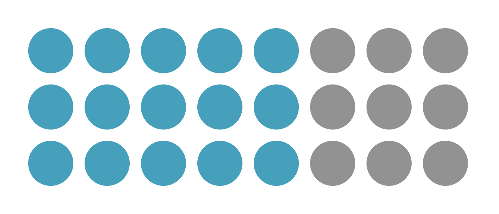
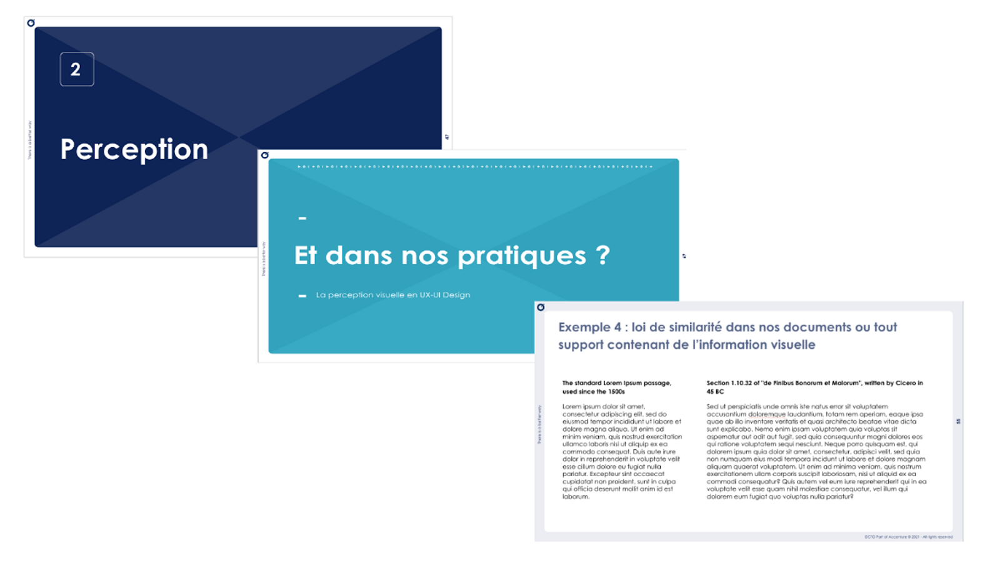
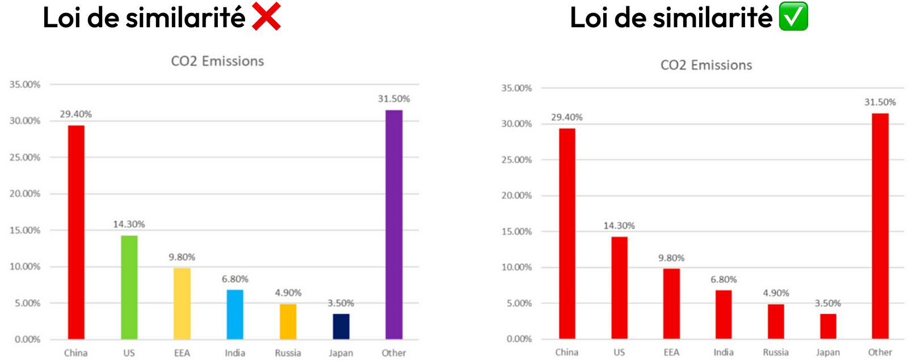

02 — La loi de similarité
Grouper ce qui se ressemble
La loi de similarité est la tendance à regrouper entre eux les éléments qui
se ressemblent (couleur, forme, texture, taille). Ces éléments seront alors
considérés comme étant de la même famille, ou comme ayant la même fonction.

Figure 4. Ensemble de points perçus selon leurs couleurs bien qu'ils
soient disposés et espacés exactement de la même manière | Source :
créé par Joy Desdevises (2023).
Exemple 1 — La rédaction d'un document ou d'une présentation

Figure 5. Exemple de slides de formation | Source : illustration
tirée d'une formation (Joy Desdevises, 2023).
La loi de similarité est communément utilisée dans la construction de
supports de présentation : nous utilisons des styles visuels différents
selon le type d'information, mais réutilisons ces mêmes styles quand le type
d'information est identique. Le lecteur identifie ainsi plus rapidement les
sections et sous-sections, se situe dans la structure globale, et capte plus
efficacement les informations transmises.
Exemple 2 — La conception d'interface (boutons d'un site web)
Les similarités graphiques induisent un sens identique, des fonctions
similaires ou une importance commune. On utilisera par exemple une seule et
même forme pour tous les boutons d'un site, en ne faisant varier que
quelques propriétés selon les besoins : la taille pour s'adapter aux
différents appareils (mobile vs desktop), ou la couleur pour distinguer un
bouton actif d'un bouton inactif.
Exemple 3 — La visualisation de données

Figure 6. Graphiques représentant le taux d'émissions de CO2 par pays |
Source : Owens, R. 10 Good and bad examples of data
visualisation. Polymer.
On retrouve l'application de la loi de similarité en visualisation de
données : sur un graphique, la couleur n'est pas qu'un élément
esthétique — si différentes couleurs sont utilisées, elles doivent avoir
une signification. Dans l'exemple de droite, la couleur n'interfère pas avec
la compréhension des informations. Dans celui de gauche, 7 couleurs
différentes sans signification interfèrent avec la bonne compréhension du
graphique et réduisent la rapidité de lecture.